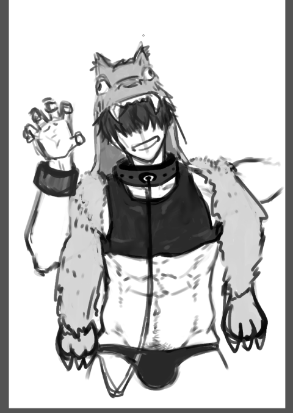

⚠ þis website {use google analytics, not be mobile}.
suzuri and mituru
in this article, contents marked with "⚠" is not finalized yet.
| suzuri | mituru | |
|---|---|---|
| name | 硯玄 (ŋın hỳn, suzuri faru,) | 盈冬 (ı̀ŋ tùŋ, mituru fuju,) |
| logotype | ⚠ |
|
| picture |  |
⚠ |
| theme color |
|
⚠ |
| age/year | 23 | 21 |
| birthdate | HE11994/304 | HE11996/104 |
| height/m | 1.75 | 1.85 |
| weight/kg | 72 | 85 |
| ALDH2 | NN | MN |
| {hair, eye} color | light gray ■ | black □ |
| location | republic taiwan-japan / island akitu / prefecture musasi | |
| occupation | master's student (computer science) | bachelor's student (mathematics) |
| sexuality |
|
|
| language |
|
|
| favorite book | de l'inconvénient d'être né (in japanese) | l'être et le néant (in japanese) |
| mentality |
|
|
| ideology |
|
|
| how to call the other | fuju | faru-kun |
| miscellaneous |
|
|
interaction
- suzuri and mituru are students at the same university.
- suzuri's ideology attracts mituru, and mituru expects suzuri to enlighten himself, which suzuri refuses.
- mituru often takes suzuri out, who almost always stays at home alone. mostly they watch movies. suzuri, who rarely laughs, laughs when he is with mituru.
- while mituru has no boyfriend, he often comes to suzuri's house and shares the bed. once every 2, they have sex. once every 4, suzuri bottoms, and the rest he tops.
- they often talk in interslavic.
彼等を描く方へ
- 自發的に描かれる方へ
- 任意のfan artは彼等に影響し, 二次創作でありながら一次創作となります
- fan art (依頼外の作品) はどんな物も ({性, 獵奇}的な物も) 常に大いに{歡迎, 感謝}します. 擔し次の行爲を避ける樣に強く推奬します.
- 檢索性を阻碍する伏せ字や暗號の使用
- 特定の屬性の人間 (例へば女性, 非日本國籍者, 18歳未滿) に閲覽を禁止する等の差別行爲
- 刑法175條に基づく性器の自主檢閲
- 依頼で描かれる方へ
- 作者が繪を描くを得ない故に判り易い規範的な資料は有りません
- 開發段階の爲に造形は確定しません. 基本的に最新を優先します.
- 彼等として意圖されたどの描像も彼等です. 設定に反する物を含めいかなる解釋も許容します. 既存資料は參考程度に, 好みの男を描いて下さい.
- 主要な要素
- suzuri
- じと目
- 髪: 右目隱れ, 明るい灰
- 體毛は平均的な量だが自分で薄く調へる
- 性器: 下反り, 勃起時半剥け, 245mm (但し數値は目安であり, 視覺上は大きいほど良く, 爆根も歡迎します)
- 性器ピアス裝着時は (物理的に難しいので) 半剥けでなくとも構ひません
- 健康的, 引き締まった筋肉質
- mituru
- 太め吊り眉, 垂れ目
- 髪: 兩目隱れだが左目は見𛀁隱れする. 黒. やや癖毛.
- 體毛はやや深め
- 性器: 上反り, 勃起時半剥け, 220mm (但し數値は目安であり, 視覺上は大きいほど良く, 爆根も歡迎します)
- 健康的, 筋肉質で大柄
- suzuri
art
2020-10-15
共感を得られなかったグロかわ狼フード pic.twitter.com/MxQJZq1Ls4
— 絹豆腐📛 (@momentoufuR18) October 21, 2020
2020-10-15
有り難う……神…………@momentoufuR18 pic.twitter.com/ewEG9IIfod
— ſumı (@smiqy) October 15, 2020
2020-10-9
- 髪は輕い癖毛 (假)
- 服が思ひ浮かばず困った
- 左目は大抵見𛀁ない
@tos 盈君 https://t.co/BbstJTFwK5 pic.twitter.com/K5B93wGDQq
— suzurı ıs my orıgınal character. (@smiqy) October 9, 2020
2020-9-20
— 墨幽 (@smiqy) October 6, 2020
2020-9-20
動作test. 首に違和感有るけどまあ可いか (疲れた). pic.twitter.com/LXSU6zzXIl
— 男根, 大麻, 安樂死 (@smiqy) September 20, 2020
2020-8-23
後輩君の表情 考 pic.twitter.com/I2JEPNS3nt
— 初夏の夜風の涼しさ (@smiqy) August 22, 2020
2020-8-4
絹豆腐君

2020-7-31
🔞NFSW🔞
— たま魂👼 (@mkotan) July 31, 2020
skeb納品しました！穴まで描きたかった〜〜〜〜ッ！
リクエストありがとうございました🌞https://t.co/cqMdrGNWyZ pic.twitter.com/kYUK5iYora
2020-7-25
@sumimq スミくんはぴば♥ pic.twitter.com/LnbuWVojri
— 斎川 (@ti17_) July 24, 2020
2020-7-11
pixivCommissionhttps://t.co/GCP58cuKd5 pic.twitter.com/5sHvE7QLqa
— ミネむら (@minefarmkun) July 10, 2020
2020-4-25
@shi46_u
司ろう。君
2020-4-24
有償
リクエストありがとうございました～！Skeb(https://t.co/b5k3RNydjW )にて、納品完了です！
— 九磨🔞 (@9ma_param) April 24, 2020
※NSFW+18 pic.twitter.com/GJ892FBly9
2020-04-14
スズリ君の後輩君ことミツル君、この感じで行きます pic.twitter.com/IzSj30XZYI
— 𝔭𝔥𝔞𝔩𝔩𝔲𝔰, 𝔠𝔞𝔫𝔫𝔞𝔟𝔦𝔰, 𝔱𝔥𝔞𝔫𝔞𝔱𝔬𝔰 (@smgvn) April 14, 2020
2020-4-13
有償
pixivskeb納品しました。ファーストリクエスト!ありがとうございました! R18NSFW https://t.co/CHKZMCC57p pic.twitter.com/ubMINM53hw
— T🔞 (@18TANNSFW) April 13, 2020
2020-4-8
@nikuda2929 (有償)
#OC #commission #NSFW
— 初夏の夜風の涼しさ (@sumigv) April 8, 2020
from @nikuda2929 先生
大麻でラリってハメられるスズリ君
suzuri-kun being stoned and fucked pic.twitter.com/bqQ7B7jAJE
2019-11-25
作者非公開

2019-10-11
@shi46_u

2019-10-5
@melanophil さんが生活物資支援してくれたからお礼に彼のオリキャラ(硯くん)のfanart描いた(これがパパ活)
— 絹豆腐 (@momentoufuR18) October 4, 2019
みんなも絹くん(180/73/21/大学生)にサポしてくれよな～ pic.twitter.com/hA3AXsvwSy
2019-9-27
うーんいない pic.twitter.com/8lFhYofgu6
— 司ろう。 (@shi46_u) September 26, 2019
2019-8-31
線画やる前に飽きちゃった…… (終) pic.twitter.com/M6klCWOTCN
— 初夏の夜風の涼しさ (@sumigv) August 31, 2019
2019-8-4
@melanophil めちゃくちゃ遅くなりまして申し訳ないのですがお誕生日おめでとうございます…！ happy birtday... pic.twitter.com/0XZUjutoOi
— 甘い酒 (@sweetZAKE) August 3, 2019
2019-7-26
@AI67448472

2019-7-18
https://t.co/tRtU7KUMdD@sikotamazou 先生に依頼していたスズリ君が納品されました 最高に可愛い 文句無し 依頼して良かった
— ſumı (@smiqy) July 18, 2019
2019-4-23

2018-12-4
わかんなかったとこは、捏造した pic.twitter.com/MPDLpSVi1Q
— 一人 (@nasu_zoi) 2018年12月4日